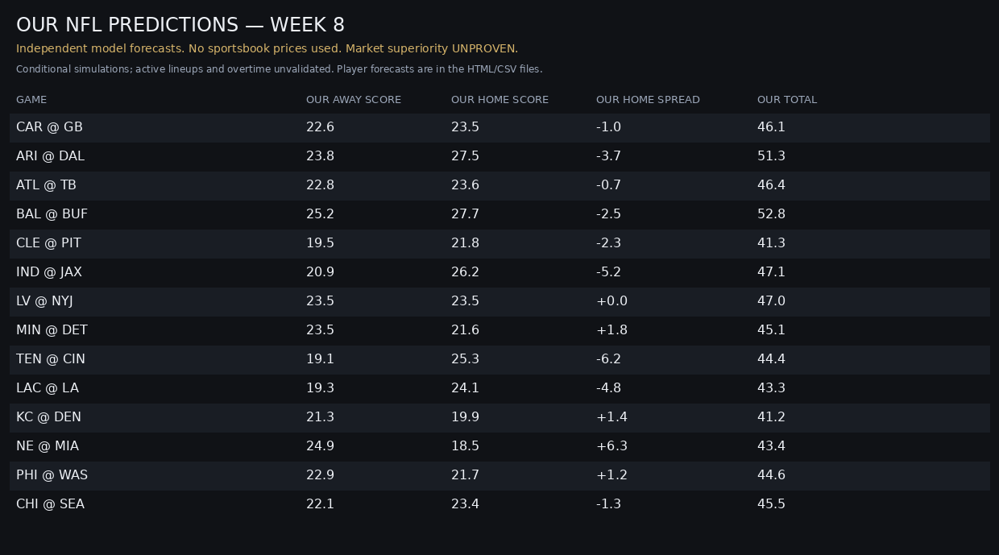

RESEARCH ONLY · NO APPROVED BETS. Scores, spreads and totals are independent conditional forecasts. Lineups, injuries, overtime, calibration and market superiority are unverified.
Model captured (UTC): 2026-10-19T22:19:59.357329+00:00 · Bundle created (UTC): 2026-10-19T22:20:00.977571+00:00
Upcoming matchups at publication: 1. Started games are historical forecasts, not live betting signals.
All player projectionsPlayer CSVGame CSVFull forecast JSONScore dashboard PNGArchived Week 5 market board
| Matchup | Our projected away–home | Our home spread | Our total | Kickoff UTC | Status |
|---|---|---|---|---|---|
| WAS @ SF | 20.8 – 28.9 | -8.1 | 49.7 | 2026-10-20T00:15:00+00:00 | Upcoming |

Home spread is negative of forecast home margin, not a calibrated cover probability. No sportsbook price, positive EV or fill is asserted.